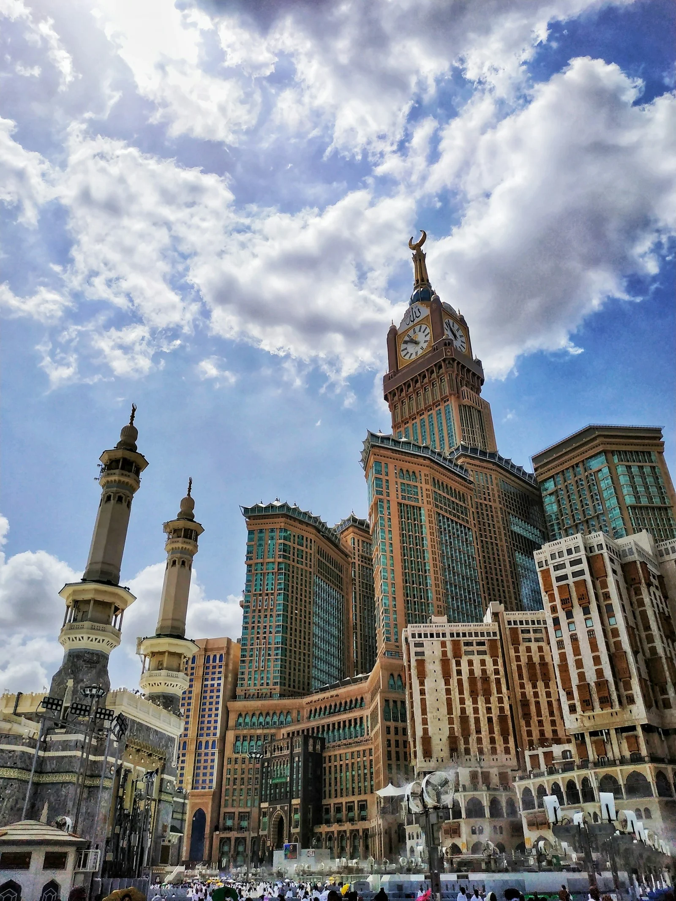

Panduan Lengkap
Umrah Mandiri
Kamu tidak sendirian. Dari perencanaan hingga kepulangan, setiap langkah sudah dijaga — agar kamu bisa fokus pada niat, bukan pada kekhawatiran.
Kamu tidak sendirian. Dari perencanaan hingga kepulangan, setiap langkah sudah dijaga — agar kamu bisa fokus pada niat, bukan pada kekhawatiran.
5 tahap dari nol sampai pulang. Termasuk aturan visa terbaru (Juni 2025), kesalahan yang bikin visa ditolak, dan tips konkret dari pengalaman jamaah.
Total biaya umrah mandiri ~Rp28 juta per orang (tiket Rp16jt + hotel Rp2.5jt + transport Rp3jt + makan Rp3jt + visa Rp3.5jt). Tiket pesawat = 57% total biaya, jadi ini yang paling menentukan budgetmu.
⚠ Aturan baru sejak 10 Juni 2025: Visa umrah tidak terbit tanpa booking hotel yang terdaftar di platform Nusuk Masar. Hotel dari Booking.com/Agoda saja tidak cukup — harus hotel yang punya izin resmi Saudi Tourism Authority. Hanya 293 hotel yang terdaftar (252 di Makkah, 41 di Madinah).
Penerbangan langsung Jakarta/Surabaya ke Jeddah: ~9-10 jam (Garuda, Saudia). Via transit Dubai/Doha/Abu Dhabi: lebih murah tapi 14-18 jam. Tip: Saudia Airlines punya fasilitas visa transit max 4 hari — alternatif untuk umrah singkat.
Rangkaian umrah: ihram → tawaf (7 putaran) → sa'i (Safa–Marwah 7 kali) → tahallul. Seluruh proses sekitar 3-4 jam. Setelah itu, sisa hari bisa kamu isi dengan ibadah sunnah dan ziarah.
Hari terakhir di Tanah Suci punya ritualnya sendiri. Tawaf Wada (tawaf perpisahan) disunnahkan sebelum pulang — lakukan di waktu sepi (setelah Subuh) supaya lebih khusyuk.
Checklist lengkap dengan estimasi biaya dan timeline. Mulai dari yang paling lama prosesnya.
Minimal berlaku 6 bulan dari tanggal berangkat + 2 halaman kosong. Perpanjangan di imigrasi: 3-5 hari kerja, biaya Rp350rb (paspor biasa) atau Rp650rb (e-paspor). Urus paling awal — ini yang paling lama prosesnya. Tip: nama di paspor harus persis sama dengan yang dipakai booking hotel dan tiket, termasuk spasi dan ejaan.
Via portal Nusuk, proses 3-7 hari kerja, berlaku 90 hari. Biaya ~Rp3-3.5jt (termasuk fee platform). Syarat: paspor, foto biometric (background putih, tanpa kacamata), sertifikat vaksin meningitis, dan bukti booking hotel yang terdaftar di Nusuk Masar. Ajukan minimal 2-3 minggu sebelum berangkat — bukan 3-5 hari.
Wajib. Urus di KKP (Kantor Kesehatan Pelabuhan), bukan rumah sakit biasa. Biaya Rp300-500rb, sertifikat ICV berlaku 3 tahun. Harus dilakukan minimal 10 hari sebelum berangkat (antibodi butuh waktu). Bawa paspor asli + fotokopi saat ke KKP. Vaksin COVID-19 sudah tidak wajib sejak 2023, tapi tetap bawa sertifikat kalau punya.
1. Nusuk — visa, booking Raudhah, QR code masuk Masjidil Haram. Daftar + verifikasi identitas sebelum booking hotel. 2. Careem — ride-hailing resmi Saudi (Grab-nya Arab). 3. Google Maps — download offline maps Makkah + Madinah sebelum berangkat. 4. SAR — booking Haramain Train.
Print dan simpan digital (Google Drive/email ke diri sendiri): e-visa, tiket pesawat, booking hotel, sertifikat ICV, asuransi perjalanan. Nomor darurat KBRI Riyadh: +966-11-488-2800, KJRI Jeddah: +966-12-667-6272. Bawa fotokopi paspor terpisah dari paspor asli — kalau paspor hilang, fotokopi mempercepat pengurusan di KJRI.
Yang sering dilupakan: adapter colokan tipe G (3 pin, beda dari Indonesia), sandal yang tidak licin untuk tawaf (lantai marmer Haram licin saat basah), power bank 10.000mAh+, obat pribadi (apotek Saudi butuh resep dokter untuk banyak obat). Ihram 2 set (pria), mukena + baju longgar (wanita). Tas kecil anti-maling untuk di masjid — kasus tas hilang saat sholat cukup sering terjadi.
Tiket pesawat = 57% total biaya umrah mandiri. Ini breakdown lengkap supaya kamu tahu ke mana uangmu pergi.

Komponen termahal umrah mandiri. Harga fluktuatif — beda 1-2 minggu booking bisa beda Rp3-5 juta. Gunakan Google Flights untuk track harga (fitur "Track prices"), lalu beli di Traveloka/Tiket.com kalau ada promo.
Langsung (Rp14-18jt PP)
Garuda/Saudia, CGK→JED 9-10 jam. Saudia punya stopover visa gratis max 4 hari — bisa transit di Riyadh tanpa biaya tambahan.
Transit (Rp12-15jt PP)
Emirates via Dubai, Qatar via Doha, Etihad via Abu Dhabi. 14-18 jam total. Hemat Rp3-5jt tapi capek — pertimbangkan kalau bawa lansia.
Kapan Booking?
2-3 bulan sebelumnya, cek harga hari Selasa/Rabu (cenderung murah). Mode incognito wajib. Harga termurah: Feb-Apr & Sep-Nov.
Penting: Sejak Juni 2025, hotel harus terdaftar di Nusuk Masar supaya visa terbit. Hanya 293 hotel yang memenuhi syarat (252 Makkah, 41 Madinah). Booking di Booking.com/Agoda tetap bisa, tapi pastikan hotelnya juga ada di Nusuk Masar.
< 500m dari Haram (Rp500-800rb)
Jalan kaki 5-10 menit ke Masjidil Haram. Worth it kalau bawa lansia/anak kecil. Contoh area: Ajyad, Ibrahim Al-Khalil.
500m-1.5km (Rp250-500rb)
Jalan kaki 15-20 menit. Banyak yang sediakan shuttle gratis ke Haram. Sweet spot antara harga dan kenyamanan.
Di Mana Booking?
Cross-check di Booking.com, Agoda, dan HalalBooking. Harga bisa beda 20-30% antar platform untuk hotel yang sama.
Makkah–Madinah: 420 km. Total budget transport selama trip: ~Rp3 juta (bandara ↔ hotel + antar kota + transport harian).
Haramain Train (~SAR 150-300)
Makkah–Madinah 2.5 jam, via Jeddah. Booking wajib via app SAR. Tiket cepat habis — booking begitu tahu jadwal pasti. Business class SAR 300, Economy SAR 150.
Bus SAPTCO (~SAR 70-100)
5-6 jam, AC, kursi nyaman. Via SAPTCO. Pilihan termurah tapi lama. Berangkat dari terminal Al-Haram (Makkah) dan terminal Madinah.
Careem / Sewa Mobil
Careem antar kota ~SAR 400-600. Cocok untuk rombongan 3-4 orang (jadi SAR 100-150/orang). Fleksibel, bisa mampir. Jangan pakai taksi tanpa meter!
Jawaban langsung, tanpa basa-basi. Klik pertanyaan untuk buka.
Ya. Saudi Arabia punya CCTV dan petugas keamanan 24 jam di seluruh area Haram. Infrastruktur untuk jamaah termasuk yang terbaik di dunia. Risiko utama bukan keamanan fisik, tapi kesalahan administrasi: visa ditolak karena nama tidak cocok, hotel tidak terdaftar di Nusuk, atau vaksin belum 10 hari. Selama dokumen benar, ribuan jamaah mandiri dari Indonesia pergi setiap tahun tanpa masalah.
Estimasi realistis untuk 9-12 hari: Tiket pesawat Rp12-18jt (komponen terbesar, 57% total), hotel Rp2.5-5jt (Rp250-500rb/malam), visa Rp3-3.5jt, transport Rp3jt, makan Rp2-3jt, vaksin Rp300-500rb. Total ~Rp23-33jt tergantung pilihan. Sebagai perbandingan, paket travel agent mulai Rp24-29jt (regular) sampai Rp39jt+ (premium). Umrah mandiri bisa lebih murah dan lebih fleksibel.
100% bisa, dan legal. Sejak Saudi luncurkan sistem Nusuk (2023), visa umrah bisa diurus langsung tanpa travel agent. Kamu booking hotel sendiri (harus di Nusuk Masar), apply visa di portal Nusuk, beli tiket pesawat, selesai. Yang bikin orang ragu biasanya karena belum tahu prosesnya — padahal langkahnya jelas dan banyak yang sudah berhasil. UMRI ada untuk bantu kamu pahami setiap langkah itu.
3-7 hari kerja setelah dokumen lengkap di-upload. Tapi jangan hitung mepet — kalau ada yang ditolak (foto tidak sesuai standar biometric, nama beda 1 huruf dari booking hotel), kamu harus revisi dan submit ulang. Ajukan minimal 2-3 minggu sebelum berangkat. Visa berlaku 90 hari, jadi tidak rugi apply lebih awal. Biaya ~Rp3-3.5jt termasuk fee platform Nusuk.
Tidak perlu. Di area Haram dan pusat kota, banyak petugas dan pedagang bisa bahasa Inggris — beberapa bahkan paham Indonesia/Melayu. Papan petunjuk bilingual (Arab + Inggris). Yang berguna: Google Translate offline (download bahasa Arab sebelum berangkat), dan hafal beberapa kata dasar: "kam?" (berapa?), "jazakallah" (terima kasih), "ayna...?" (di mana...?). Pakai Careem supaya tidak perlu negosiasi bahasa dengan supir taksi.
Feb-Apr dan Sep-Nov — cuaca sejuk (25-35°C), harga tiket dan hotel paling murah, Masjidil Haram relatif longgar. Hindari Jun-Agu (45°C+, tawaf di luar sangat menyiksa) dan musim haji (Dzulhijjah, umrah ditutup). Ramadhan pahala berlipat tapi sangat ramai dan mahal — tiket bisa 2x lipat, hotel naik 50-100%. Kalau bawa anak sekolah, target libur semester (Des-Jan atau Jun-Jul) tapi siap bayar lebih mahal.

Lanjut ke breakdown biaya detail, contoh itinerary 9-14 hari, dan checklist yang bisa kamu centang satu per satu.